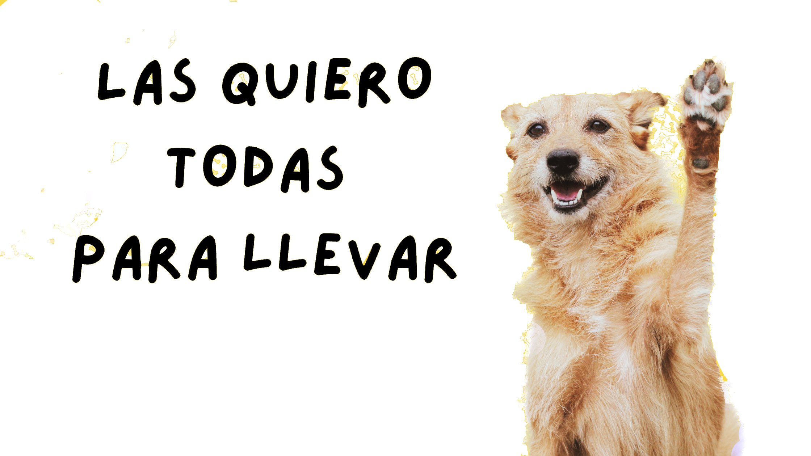
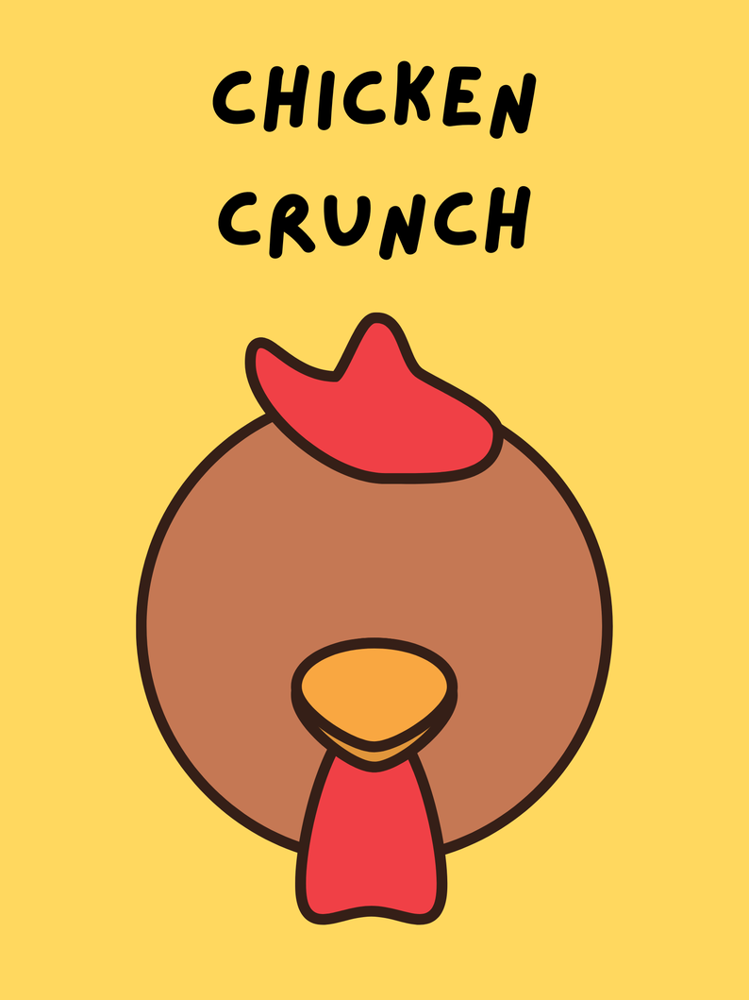
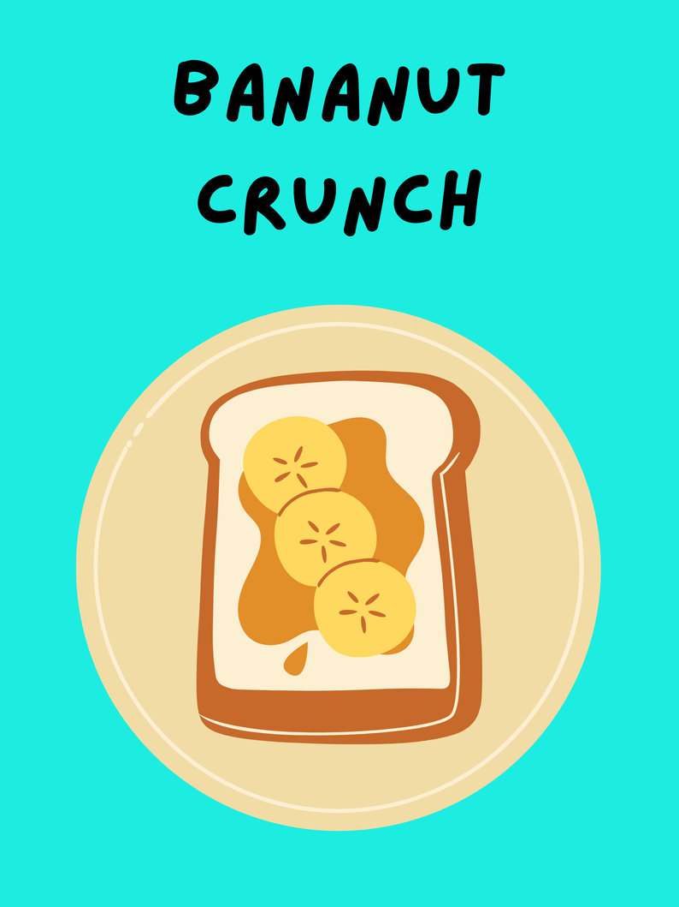
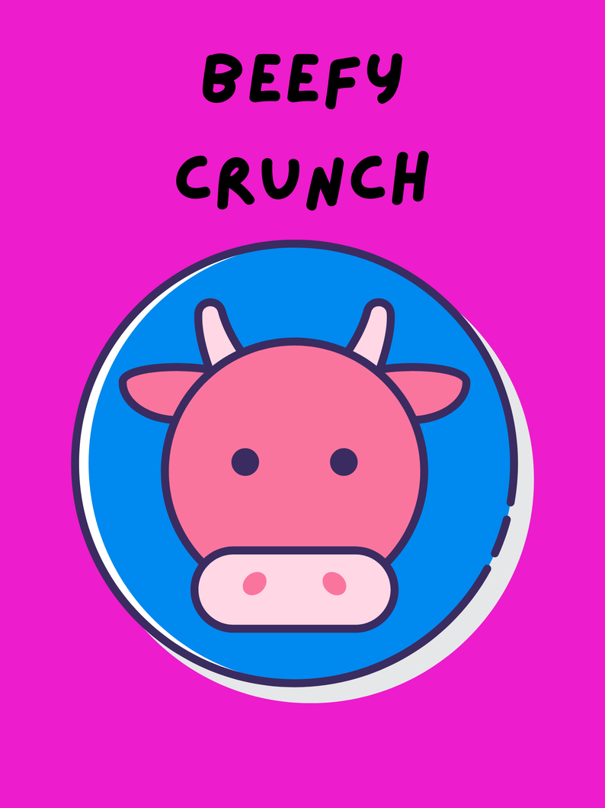

Saludables, hechas con mucho amor y sin nada de conservadores.
Porque nuestros peludos merecen lo mejor, nos dedicamos a preparar los premios y postres caseros.
Con ingredientes naturales, sin conservadores, colorantes artificiales, 100% libres de azucares añadidos, hasta tú podrías comerlos - si tu peludo dejara algo.
Nuestras consentidas
Tenemos una gran variedad de opciones sobre pedido, pero si te quedaste sin premios, estas son las opciones que siempre tenemos disponibles.



Escríbenos
Cualquier duda, o pedido lo puedes hacer en la siguiente dirección.
hola@gualosinas.com